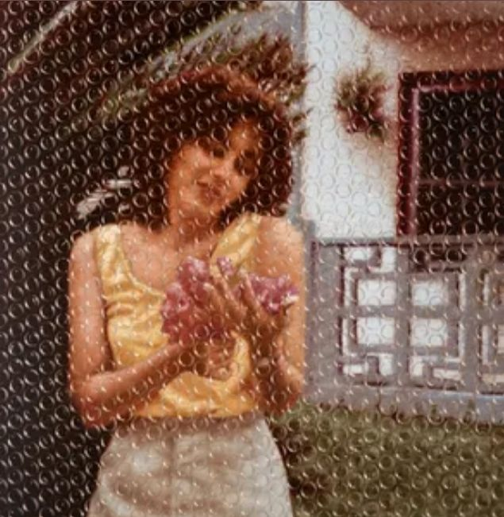

Es uno de sus proyectos más personales y emocionales. Está dedicado a su madre, lo que se refleja en letras más profundas sobre la familia, el amor y las experiencias de vida. Musicalmente mezcla trap con reggaetón y sonidos más suaves. Este álbum muestra un lado más humano y sentimental del artista, destacándose canciones como TQMQA.
Bendecido — Eladio Carrión
La Canción Feliz del Disco — Eladio Carrión
TQMQA — Eladio Carrión
Sonrisa — Eladio Carrión
Sigo Enamorao’ — Eladio Carrión
Tu Ritmo — Eladio Carrión
Hey Lil Mama — Eladio Carrión
Tranquila Baby — Eladio Carrión
Tanta Droga — Eladio Carrión
El Malo — Eladio Carrión
Fé, Cojones y Paciencia — Eladio Carrión
Todo Lit — Eladio Carrión
That Mother*** (Skit) — Eladio Carrión
Mencionar — Eladio Carrión
RKO — Eladio Carrión
Luchas Mentales — Eladio Carrión
Mama’s Boy — Eladio Carrión
SOL MARÍA